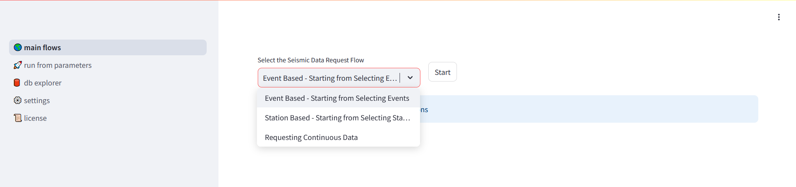
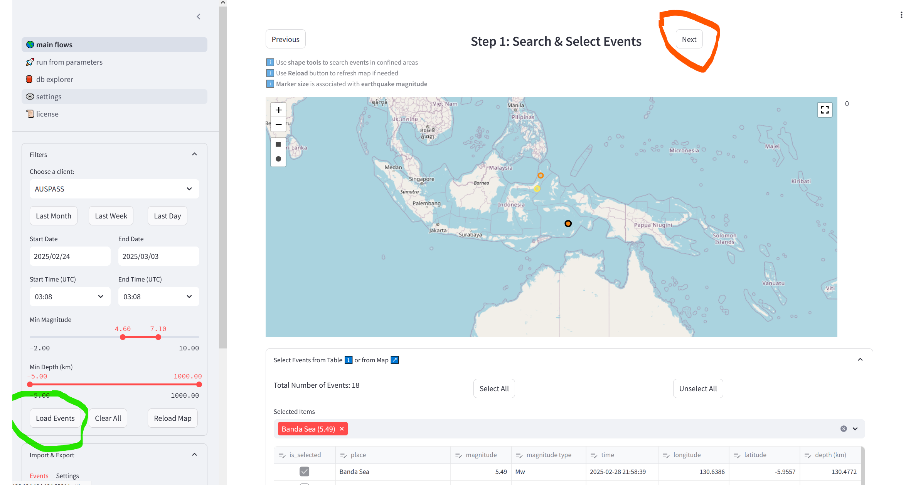
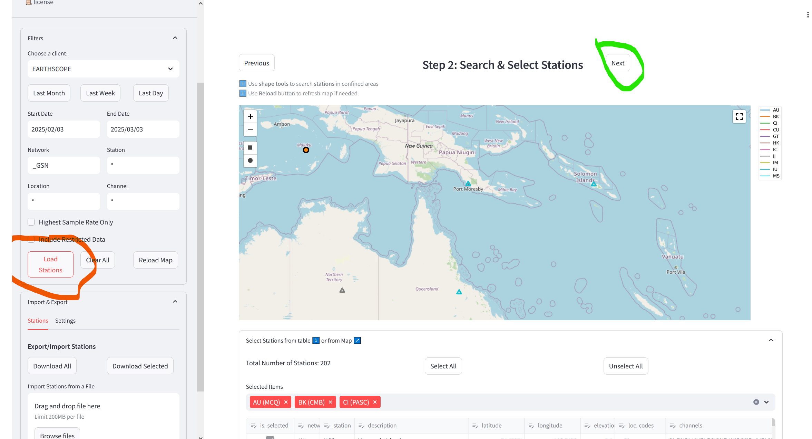
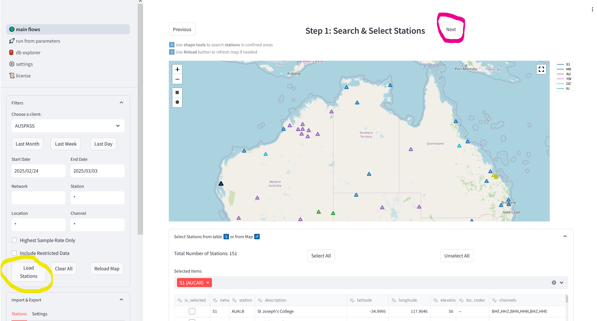
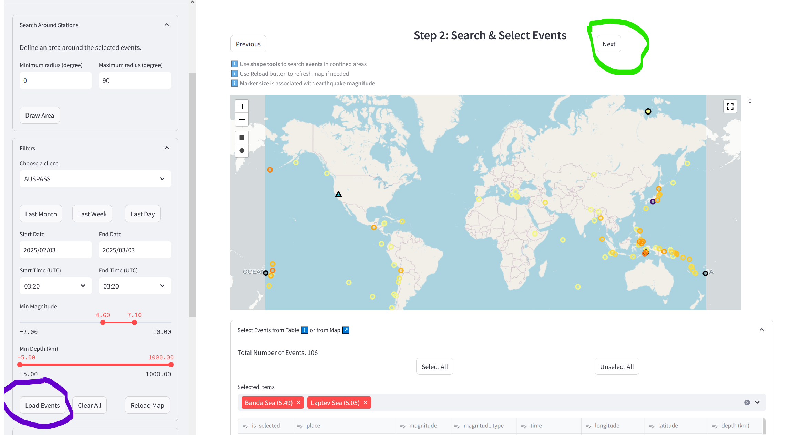
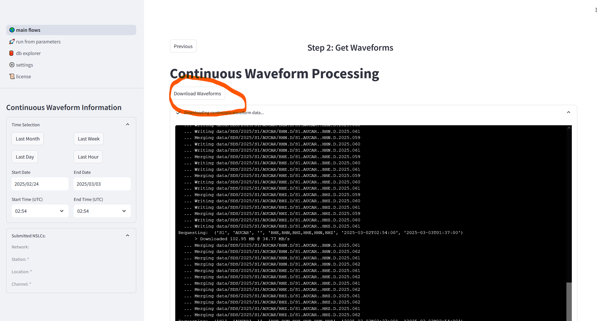

Getting Started
Requirements
At least 8 GB RAM
Python >= v3.10
Installation
Install via pip (easy way)
python3 pip install seed-vault
Install from source (if you insist!)
Step 1: Clone repository
git clone https://github.com/AuScope/seed-vault.git
Step 2: Setup and run
Then can build via pip:
python3 -m pip install ./seed-vault
Or,
Linux/MacOS
cd seed-vault
source setup.sh
source run.sh
Windows
Open a powershell and run following commands:
cd seed-vault
.\setup-win.ps1
.\run-win.ps1
NOTES:
May require python3 venv software package e.g. For python v10 on Ubuntu you may need to:
sudo apt update
sudo apt install python3.10-venv
Starting the Application
seed-vault
Getting to the Opening Page
You’ll get a message like this:
Collecting usage statistics. To deactivate, set browser.gatherUsageStats to false.
You can now view your Streamlit app in your browser.
Local URL: http://localhost:8501
Network URL: http://222.111.001.002:8501
External URL: http://222.111.001.002:8501
Enter a URL into your brower, and you should see the opening page:
From here you can select one of three options, then hit the “Start” button:
Event based
Station based
Continuous Data
i. Event Based Workflow
“Step 1: Search & Select Events” Page
Hit the “Load Events” button (circled in green)
Select events from the map and/or directly in the table
Hit the “Next” button (circled in orange)
“Step 2: Search & Select Stations” Page
Hit the “Load Stations” button (circled in orange)
Select stations from the map and/or directly in the table
Hit the “Next” button (circled in green)
“Step 3: Waveforms” Page

Click on the “Get Waveforms” button (circled in pink)
ii. Station Based
“Step 1: Search & Select Stations” Page
Hit the “Load Stations” button (circled in yellow)
Select stations from the map and/or directly in the table
Hit the “Next” button (circled in pink)
“Step 2: Search & Select Events” Page
Hit the “Load Events” button (circled in purple)
Select events from the map and/or directly in the table
Hit the “Next” button (circled in green)
“Step 3: Waveforms” Page
Click on the “Get Waveforms” button (circled in pink)
iii. Continuous Downloads
“Step 1: Search & Select Stations” Page
Hit the “Load Stations” button (circled in yellow)
Select stations from the map or directly in the table
Hit the “Next” button (circled in pink)
“Step 2: Get Waveforms” Page
Hit the “Download Waveforms” button, wait for download to complete